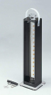

2025年
問題127 排水の水質に関する次の記述のうち，最も不適当なものはどれか．
（1）透視度は，水の清澄の程度を示す指標である．
（2）溶存酸素(DO) は，水中に溶解している分子状の酸素である．
（3）生物化学的酸素要求量(BOD) は，主として有機物質が酸化剤によって酸化される際に消費される酸素量である．
（4）全窒素は，有機性窒素，アンモニア性窒素，亜硝酸性窒素及び硝酸性窒素の総和である．
（5）大腸菌は，糞ふん便汚染の有無を判断する指標である．
2025年
問題127 正解（3） 頻出度AAA
-(3) は，COD（化学的酸素要求量）の説明である．BOD（生物化学的酸素要求量）は，水中の有機物が好気性微生物によって酸化・分解されるのに必要とされる酸素量のことである．
BOD（生物化学的酸素要求量）単位mg/L
水中の有機物が生物化学的に酸化されるのに必要な酸素量のことで，生物化学的酸素要求量ともいう．生物化学的酸化とは，水中の好気性微生物が有機物を栄養源とし，水中の酸素を消費してエネルギー化，生命維持・増殖するとき，有機物が生物学的に酸化分解されることをいい，有機物が多いほど消費される酸素量が多くなる．したがって，BODが高いことはその水中に有機物が多いことを示し，化学的酸素要求量（COD）とともに水質汚濁を示す重要な指標で，BODの値が大きいと腐敗性が強くなる．
BODは試料を20℃，5日間静置し，静置前と後の溶存酸素量をウィンクラー法（滴定法の一種）で測定し，その間に消費された溶存酸素量mg/Lで表す．
COD（化学的酸素要求量）［mg/L］
水中の被酸化性物質（有機物）を酸化剤で化学的に酸化したときに消費される酸化剤の量を酸素に換算したもの．CODが高いことはその水中に有機物が多いことを示し，生物化学的酸素要求量（BOD）とともに水質汚濁を示す重要な指標．酸化剤としては過マンガン酸カリウム，重クロム酸カリウムなどがある．
CODはBODにくらべて短時間に測定できることや，塩分，植物プランクトンの光合成などによる影響を受けないなどの利点から，環境基準では海域および湖沼の汚濁指標として採用されている．
CODとBODの間には一定の関係がある場合が多く，一般にBOD/COD比が高い場合は，汚水処理法として生物処理法，この値が低い場合は物理化学処理法が採用される．
-(1)透視度（2025-127-1 図参照）は，水の濁りや着色の程度を示すもので，透視度計の上部から透視し，底部に置いた標識板の二重十字が初めて明らかに識別できるときの水面から底部までの高さを，cmで表したものが透視度である．数値が小さいほど，水が濁っていることを示す．透視度は，BODと相関を示すことが多く，汚水処理の進行状況を推定する指標として用いられる．

出典 株式会社佐藤商事
https://satosokuteiki.com/
-(2) DO（溶存酸素）［mg/L］
水中に溶けている分子状の酸素のことをいい，溶存酸素は水の自浄作用や水中の生物にとって必要不可欠のものである．溶解量を左右するのは水温，圧力，塩分などで，清澄な水の飽和溶存酸素の濃度は20℃，1気圧で8.84mg/Lである．汚染度の高い水中では消費される酸素の量が多いので溶存する酸素量は少なくなるので，生物処理工程の管理や放流水の評価の際，重要な指標となる．
河川等の水質が有機物で汚濁されると，この有機物を分解するため水中の微生物が溶存酸素を消費し，その結果，溶存酸素が不足して魚介類の生存が脅かされる．さらに，この有機物の分解が早く進行すると，酸素の欠乏とともに嫌気性の分解が起こり，硫化水素，メタン等の有毒ガスを発生して水質は著しく悪化する．
-(4) T－N（全窒素）［mg/L］
窒素化合物全体のことで，無機態窒素と有機態窒素に分けられる．さらに無機態窒素はアンモニウム態窒素（NH4－N），亜硝酸態窒素（NO2－N），硝酸態窒素（NO3－N）に分類される．
有機体窒素はタンパク質に起因するものと，非タンパク性のものとがある．窒素は，動植物の増殖に欠かせない元素で，富栄養化の目安になる．窒素化合物は，閉鎖性水域に放流される際の水質項目として用いられている．
-(5) 大腸菌
グラム陰性，無芽胞の短かん菌で，好気性あるいは通性嫌気性菌の総称．乳糖を分解してガスと酸を生じる．大腸菌群試験で，人畜の糞便による汚染の有無およびその程度を知り，衛生の危機管理を行う．大腸菌は，消化器系の病原菌（赤痢，腸チフス菌ほか）の存在を予見するが，大腸菌群全てが有害ではない．人間の腸内に住んでいる大腸菌や土壌中にいる細菌も含まれる．
大腸菌は，一般的に非病原性で，し尿中には1mL当り100万個以上が存在し，汚水処理の進行に伴いその数は減少することから，各処理工程の機能評価および処理水の衛生的な安全性を確保するための指標とされている．浄化槽の処理水の排出基準は，建築基準法によって大腸菌群数が1mL当り3,000個以下と定められている．